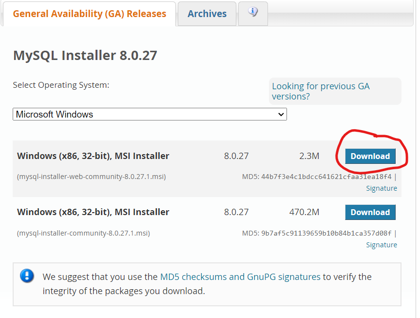
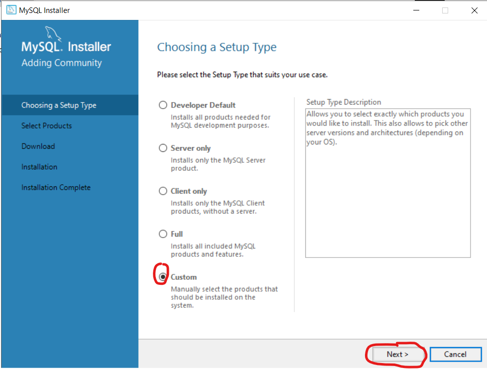
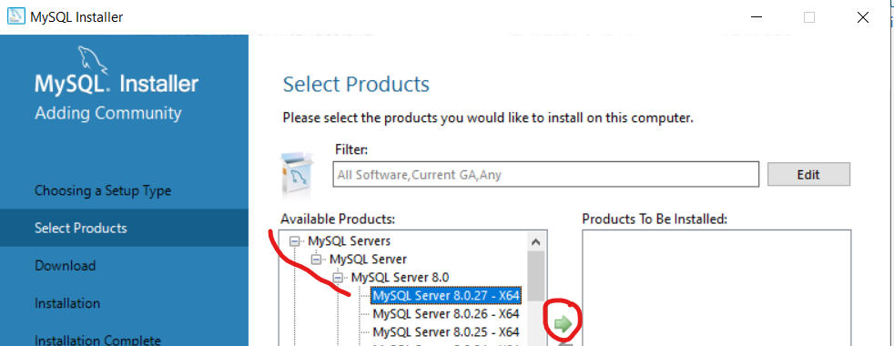
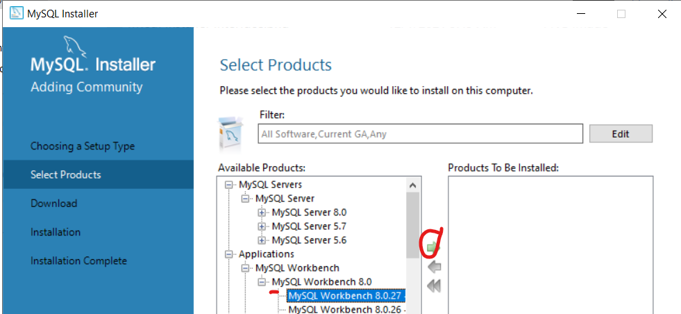
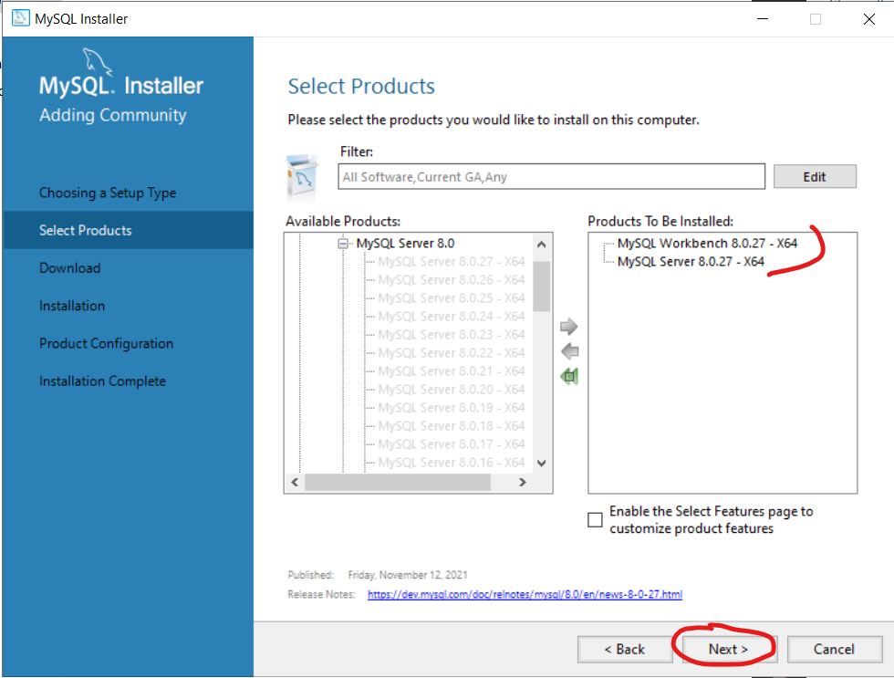
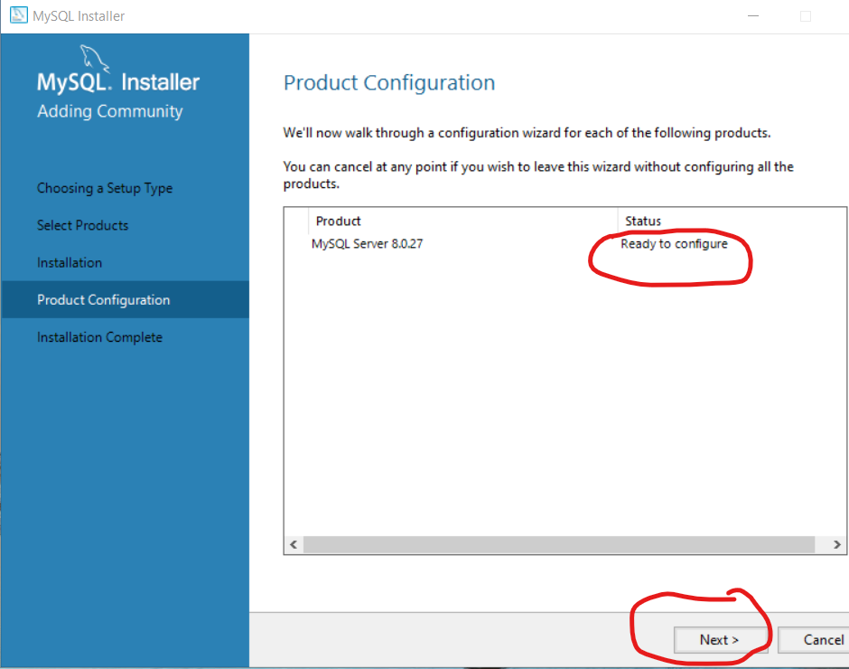
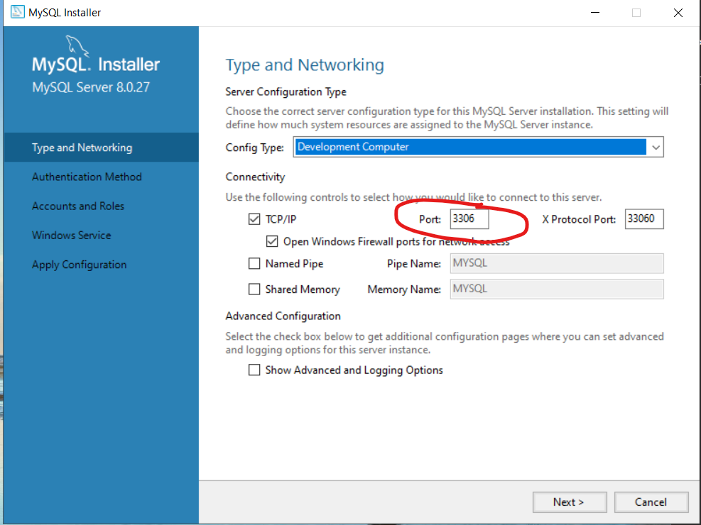
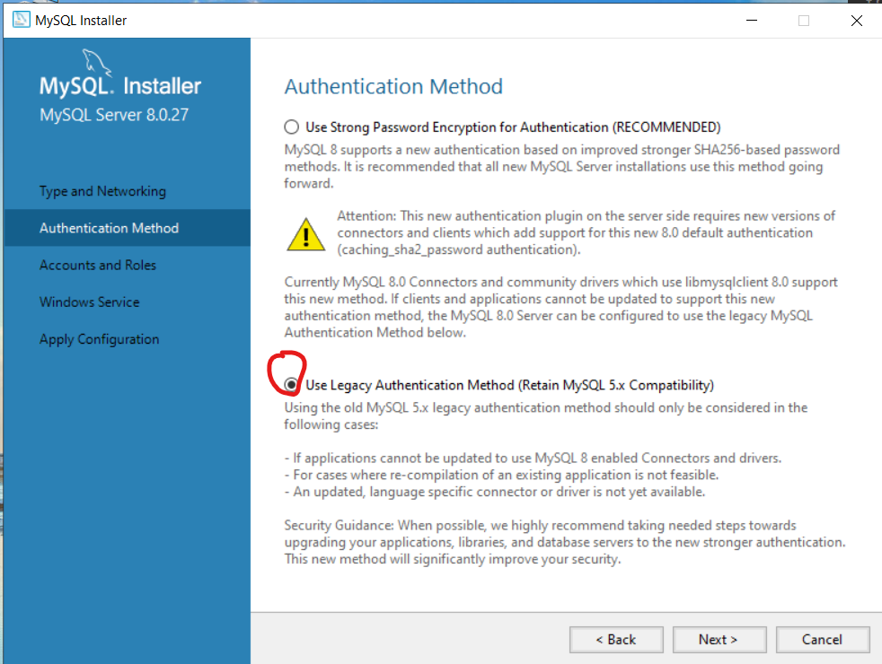
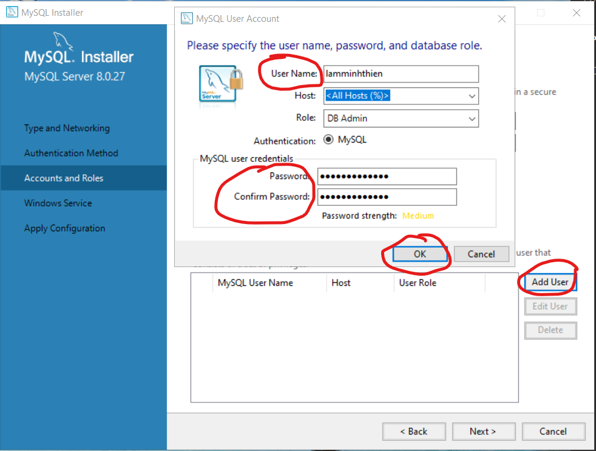
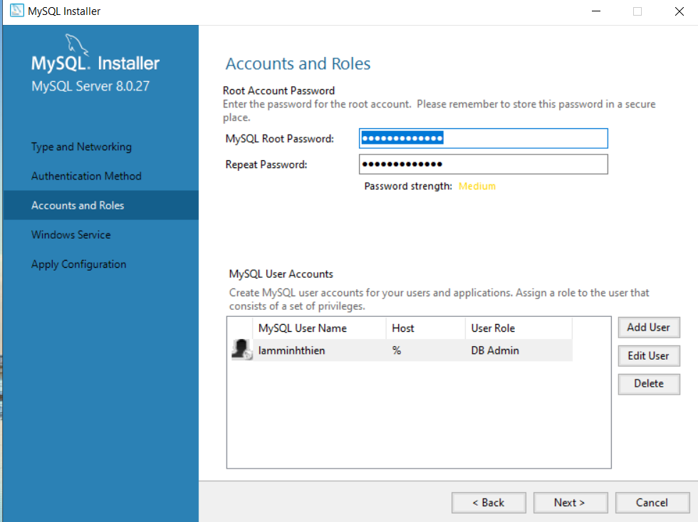

<div class="database">
    <div class="mysql_installer">
        <h1>Tải MySQL Installer</h1>
        <p>Công cụ này sẽ hỗ trợ chúng ta cài đặt MySQL Server, 
         thiết lập Cổng localhost, thiết lập tài khoản admin. Và cài đặt
         MySQL Workbench để tương tác với MySQL bằng giao diện đồ họa (GUI)
        </p>
        <a href="https://dev.mysql.com/downloads/installer/">Vào trang download</a>
        <p>Nhấn vào Download thứ nhất</p>
        
        <p>Nhấn vào dòng chữ No thanks, just start my download</p>
        
        <p>Tại giao diện chính của MySQL Installer, ta click chuột vào Add..</p>
        
        <p>Chọn Custom và click Next</p>
        
        <p>Chọn phiên bản MySQL Server mới nhất như hình và nhấn nút mũi tên màu xanh</p>
        
        <p>Chọn phiên bản MySQL Workbench mới nhất như trong hình và nhất nút mũi tên màu xanh</p>
        
        <p>Tiếp theo ta nhấn next</p>
        
        <p>Nhấn vào Excute</p>
        <h2>Lưu ý, trong tình hình đứt cáp quang hiện nay, các bạn nên đăng ký 4G để phát wifi và nhấn Try Again để cài đặt lại</h2>
        <p>Sau khi download xong ta nhấn Next và nhấn Excute để tiến hành cài đặt</p>
        <p>Quá trình cài đặt hoàn tất ta nhấn Next để cấu hình MySQL Server</p>
        
        <p>Giữ nguyên mọi thông số cấu hình như trong ảnh, và nhấn tiếp Next</p>
        
        <p>Chú ý cổng 3306 (Quan trọng khi cấu hình với MyBatis)</p>
        <p>Ở bước Authentication Method, ta chọn cái thứ hai (Legacy) và nhấn Next</p>
        
        <p>Mục đích là để tránh rắc rối sau này</p>
        <p>Ở Accounts and Roles, ta cần phải setup password cho tài khoản root</p>
        
        <p>Đó chỉ mới là tài khoản root, để truy cập database, ta cần tạo tài khoản user cấp thấp</p>
        
        <p>Sau khi tạo tài khoản xong, hãy kiểm tra xem tài khoản vừa tạo có xuất hiện ở MySQL User Accounts không, rồi ta nhấn Next</p>
        
        <p>Ở Windows Service, ta nhấn next</p>
        
        <p>Ở Apply Configuration, ta nhấn Excute và đợi chữ "Finish" xuất hiện, ta click vào nó</p>
        


    </div>
</div>
